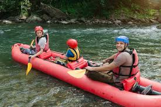
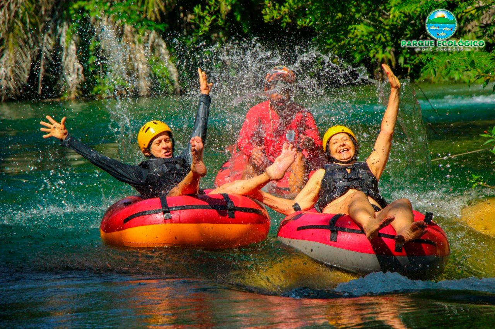
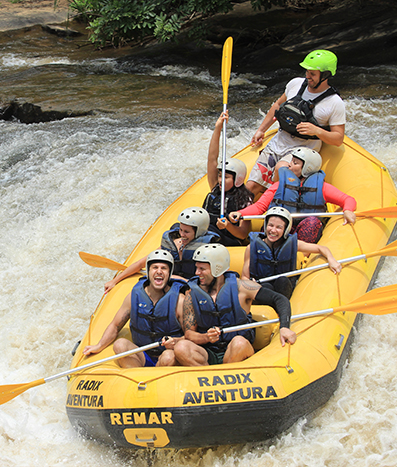

Nossos Passeios
Encontre a aventura perfeita para o seu nível de adrenalina. Equipamentos inclusos e guias certificados.
Reserve Seu Passeio AgoraEscolha Sua Aventura

Corredeiras em Família (Nível Iniciante)
Perfeito para crianças e primeira viagem. Um percurso calmo de 5km com pequenas quedas d'água, ideal para contemplar a natureza e se divertir com total segurança.
- Duração: 2 horas
- Idade mínima: 6 anos

Desafio do Cânion (Nível Intermediário)
Para quem busca emoção moderada. Navegue por 12km de águas agitadas de classe II e III através de um cânion imponente, com paradas estratégicas para banho de rio.
- Duração: 4 horas
- Idade mínima: 12 anos

Adrenalina Extrema (Nível Avançado)
O teste definitivo para os corajosos. Enfrente 18km de corredeiras rápidas e técnicas de classe IV e V. Prepare-se para muita ação e uma descarga pura de adrenalina.
- Duração: Dia inteiro (6h)
- Idade mínima: 18 anos
Comparativo de Serviços
| Nome do Passeio | Dificuldade | Preço por Pessoa | Fotos Inclusas | Almoço |
|---|---|---|---|---|
| Corredeiras em Família | Classe I - II | R$ 120,00 | Não (Opcional) | Lanche leve |
| Desafio do Cânion | Classe II - III | R$ 180,00 | Sim | Lanche leve |
| Adrenalina Extrema | Classe IV - V | R$ 290,00 | Sim (Fotos e Vídeo) | Almoço Completo |